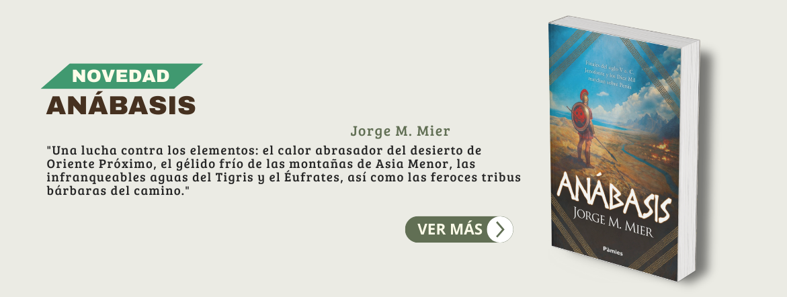

<!-- <section class="px-3 py-5 bg-white lg:py-10"> -->
  <div class="pt-20 grid grid-cols-1 items-center justify-items-center">
     
    <!--Slider-->
     <!-- <div class="swiper multiple-slide-hero-carousel w-full swiper-container relative">
      <div class="swiper-wrapper mb-16 group object-cover">
        <div class="swiper-slide cursor-pointer">
          
        </div>
        <div class="swiper-slide cursor-pointer">
          
        </div>
        <div class="swiper-slide cursor-pointer">
          
        </div>
      </div> -->

        <!-- Contenedor de paginación  -->
      <!-- <div class="swiper-pagination flex justify-center"></div>
      
    </div>  -->
  </div>
<!-- </section> -->


<div class="container mx-auto relative">
  <!-- <div class="group flex justify-center items-center"> -->
    
    <!--Slider-->
     <!-- <div class="swiper multiple-slide-hero-carousel w-full swiper-container relative">
      <div class="swiper-wrapper mb-16">
        <div class="swiper-slide cursor-pointer">
          
        </div>
        <div class="swiper-slide cursor-pointer">
          
        </div>
      </div>

        Contenedor de paginación 
      <div class="swiper-pagination flex justify-center"></div>
      
    </div> -->
  <!-- </div> -->
</div>

|<div class="container mx-auto mt-5 relative">
    <div class="container mx-auto text-center m-5">
        <h2 class="text-4xl font-bold text-cafe-oscuro font-Jost">Géneros destacados</h2>
    </div>

    <!-- Botón anterior (left) -->
    <button id="slider-button-left" class="swiper-button-prev group flex justify-center items-center text-cafe-claro hover:text-cafe-oscuro absolute left-1 top-1/2 transform -translate-y-1/2"></button>

    <!--Slider-->
    <div class="swiper multiple-slide-carousel md:max-w-[95%] sm:max-w-[85%] swiper-container relative">
      <div class="swiper-wrapper mb-16 pb-10">
        <div class="swiper-slide cursor-pointer" *ngFor="let genre of genres">
            <div class="bg-crema h-[250px] rounded-2xl flex flex-col justify-center items-center transition-all duration-200 hover:bg-cafe-oscuro hover:text-white group">
              <div class="bg-cafe-oscuro text-white rounded-full p-3 mb-3 group-hover:bg-white group-hover:text-cafe-oscuro">
                <i [ngClass]="genre.icon" class="text-5xl"></i>
              </div>
                <p class="text-cafe-oscuro font-Lobster text-2xl text-center mb-2 group-hover:text-white">{{ genre.description }}</p>
                <p class="text-cafe-oscuro group-hover:text-white text-center pl-2 pr-2">{{ genre.overview }}</p>
            </div>
        </div>
     </div>
  </div>

  <!-- Botón siguiente (right) -->
  <button id="slider-button-right" class="swiper-button-next group flex justify-center items-center  text-cafe-claro hover:text-cafe-oscuro absolute top-1/2 right-1 transform -translate-y-1/2"></button>
</div>